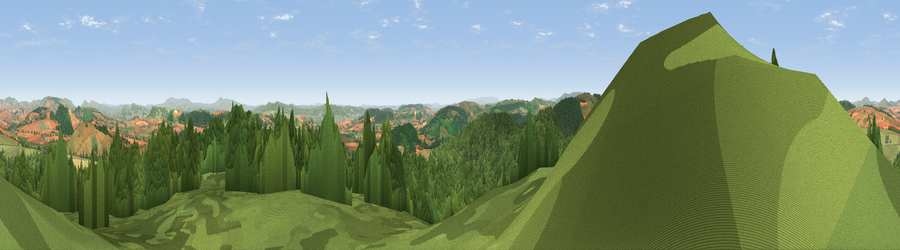

Viewpoint near Hopton Castle
#3436 in England · top 9% of its area beats it · near Hopton CastleWhere it is
The exact computed spot (SO 35425 77200). Click the marker for map links.
The view, rendered

A 360° render of this exact spot computed from the terrain model, tree cover and land cover — summer colours, afternoon light, calibrated against photographs of famous viewpoints. Real trees, hedges and buildings will differ in detail.
The panorama
Grey silhouette: terrain skyline in each direction (720 bearings, Earth curvature and refraction included). Dashed green: skyline with trees (+15 m) and buildings (+8 m) as obstacles. Blue strip: how far the ground is visible on each bearing.
Where the view opens
Wedge length = distance to the farthest visible ground on that bearing (vegetation-aware). Rings at 10, 25 and 50 km.
What fills the view
51% woodland · 34% grassland · 15% cropland
Angular shares of the visible panorama (visual magnitude), not map area. Landscape diversity 0.44 (0–1 Shannon).
Key numbers
More beautiful places nearby
The staircase of upgrades: each row has a higher view potential than everything closer. Driving times are estimates from straight-line distance, calibrated against real road routing — check an actual route before setting out.
| Place | Direction | Drive | Score |
|---|---|---|---|
| Viewpoint near Hopton Castle | E · 0 km | ~1 min | 79.3 |
| Viewpoint near Pipe Aston | ESE · 11 km | ~21 min | 81.9 |
| Bringewood Hill | ESE · 12 km | ~22 min | 82.2 |
| Gatley Hill | SE · 12 km | ~23 min | 82.6 |
| Viewpoint near Asterton | NNE · 12 km | ~23 min | 83.0 |
| Titterstone Clee | E · 24 km | ~39 min | 83.8 |
| The Lawley | NE · 25 km | ~40 min | 85.8 |
| Viewpoint near Little Wenlock | NE · 41 km | ~61 min | 86.6 |
52.38900, -2.95029 · source: screening · position refined by local search. Computed location — check access rights before visiting.